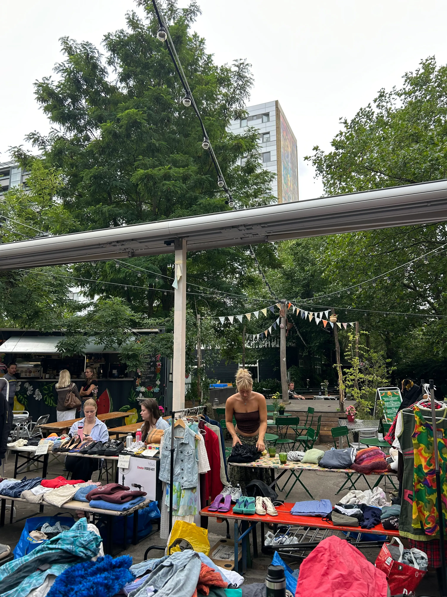
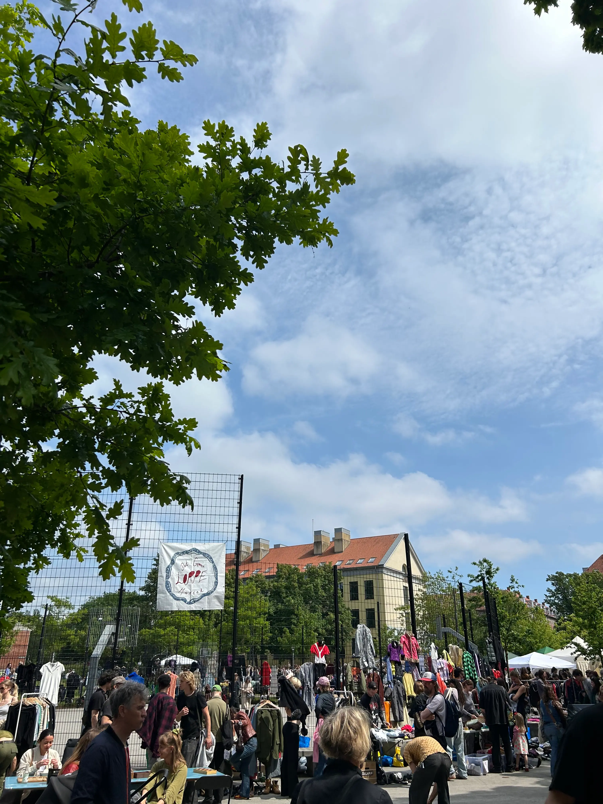
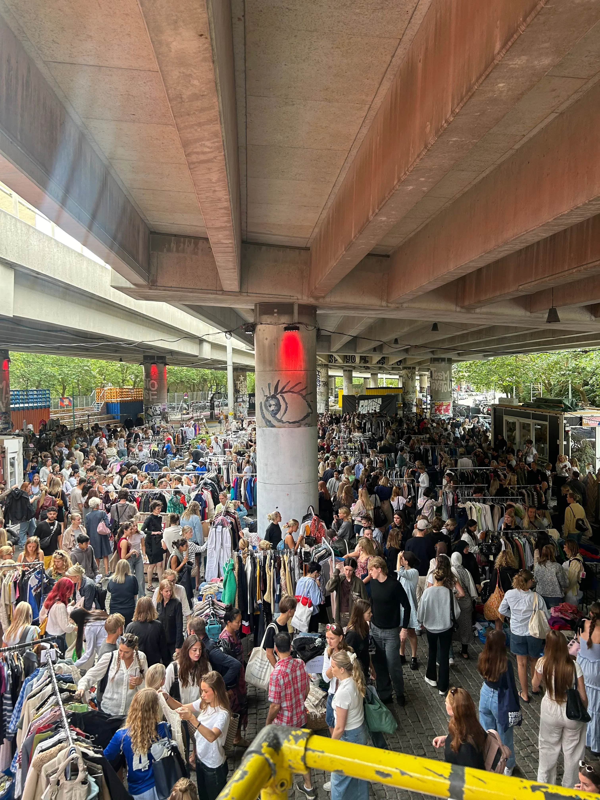
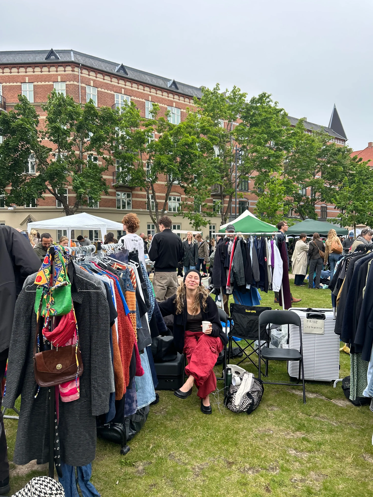

Din vintage guide
Personlige fund, sæsonens trends og kommende loppemarkeder samlet ét sted. En kurateret guide til skatte, stil og loppemarkeder.
Næste weekends loppemarkeder i København

Holte loppemarked

Gentofte Loppemarked

Vera's marked

Det grønne loppemarked
Inspiration til dit næste loppefund
Gå på opdagelse i vores moodboards og find inspiration til sæsonens bedste vintagefund.